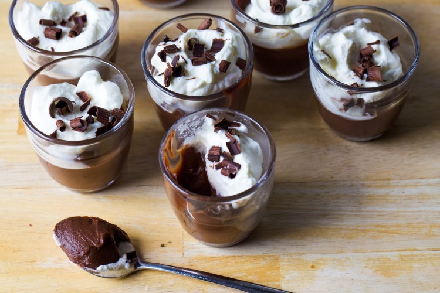

Ingredients:
- 5 large egg yolks
- 1/3 cup granulated sugar
- 2 cups heavy cream (plus an additional 1/2 cup for whipped cream)
- 8 ounces semi-sweet chocolate (finely chopped)
- 2 teaspoons unsalted butter
- Two pinches of sea salt
- 1/4 teaspoon vanilla extract
- 2 teaspoons bourbon, brandy, or another liqueur (optional)
Instructions:
- Prepare the egg mixture: In a medium-sized saucepan, whisk the egg yolks with granulated sugar until fully combined.
- Add cream: Slowly drizzle in 2 cups of cream while whisking constantly to prevent lumps.
- Cook the mixture: Warm the mixture over medium-low heat, stirring frequently, until thickened enough to coat a spoon (5–8 minutes). Avoid letting it simmer or boil.
- Melt the chocolate: Place the chopped chocolate in a large bowl and strain the egg mixture over it. Stir until the chocolate is fully melted.
- Finish the mixture: Add butter, sea salt, and vanilla, stirring until everything is well combined.
- Chill: Divide the mixture into cups and chill until fully set (about 3–5 hours).
- Whipped cream: Whip the remaining 1/2 cup cream to soft peaks and spoon generously over each serving before serving.
- Serve: Serve the chocolate budino cold with a side of strong coffee and biscotti!
Go to Homepage